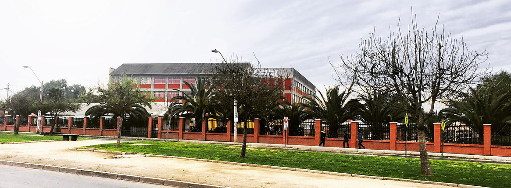

Pre-Básica, Básica y Media
Estudiantes distribuidos desde Pre-Kínder hasta 4º año de Enseñanza Media.
Colegio
Información institucional organizada para estudiantes, familias y comunidad.
Bienvenida
El Establecimiento Educacional San Isaac Jogues se encuentra ubicado en Avenida Lo Cruzat 164, comuna de Quilicura. El colegio orienta sus objetivos a brindar una educación integral que favorezca valores y principios cristianos, en un ambiente donde niños y niñas se sientan acogidos y puedan desarrollarse plenamente.
Su dependencia es particular subvencionado, con copago por subvención compartida y arancel diferenciado por cantidad de hermanos. Cuenta con becas para alumnos prioritarios y vulnerables.

Jornadas
Estudiantes distribuidos desde Pre-Kínder hasta 4º año de Enseñanza Media.
Pre Kínder, Kínder y cursos de 5º básico a 4º medio.
Pre Kínder, Kínder y cursos de 1º a 4º básico.
Historia
Comienza a forjarse la idea de crear un nuevo colegio en Quilicura, encabezada por el R.P. Gerardo Parent junto a profesores que integran la sociedad sostenedora.
El colegio inicia su funcionamiento el 8 de marzo. El 16 de junio obtiene el reconocimiento oficial del Ministerio de Educación mediante Decreto Cooperador Nº 1756.
El colegio se traslada a su ubicación actual, proceso importante para toda la comunidad educativa.
Recibe estudiantes de diferentes sectores de Quilicura desde Pre-Kínder hasta 4º medio, totalizando 31 cursos.
Proyecto Educativo
Lograr la formación integral de los educandos, proporcionando instancias educativas motivadoras e innovadoras.
Contribuir a formar personas con sólida formación académica y espíritu cristiano crítico, capaces de actuar como agentes de cambio y progreso social.
Respeto, solidaridad, creatividad, trabajo en equipo, identidad y compromiso familiar en el proceso educativo.
Ambiente escolar de sana convivencia entre los distintos estamentos de la comunidad educativa.
Estrategias para apoyar el proceso de enseñanza-aprendizaje en distintos niveles.
Área valórica, cristiana, ecológica, artística y deportiva a través de actividades curriculares y extracurriculares.
Equipo de Gestión
 Ricardo Guzmán SierraDirector
Ricardo Guzmán SierraDirector Norberto Araneda GómezInspector General
Norberto Araneda GómezInspector General July Rodríguez LealJefa UTP Párvulos
July Rodríguez LealJefa UTP Párvulos Uberlinda Sierra CisternasInspectora General
Uberlinda Sierra CisternasInspectora General Nery Barroso UrraJefa UTP de 1º a 6º Básico
Nery Barroso UrraJefa UTP de 1º a 6º Básico Luis Bezzolo JiménezInspector General
Luis Bezzolo JiménezInspector General Manuel Zuñiga PinoJefe UTP 7º Básico a IV Medio
Manuel Zuñiga PinoJefe UTP 7º Básico a IV Medio Beatriz Donoso VidalCoordinadora de convivencia escolar
Beatriz Donoso VidalCoordinadora de convivencia escolar Luisa Jara CarranzaCoordinadora de recursos de aprendizaje
Luisa Jara CarranzaCoordinadora de recursos de aprendizajeDocumentos Relevantes
Documentación institucional relevante para consulta de familias, estudiantes y comunidad educativa.